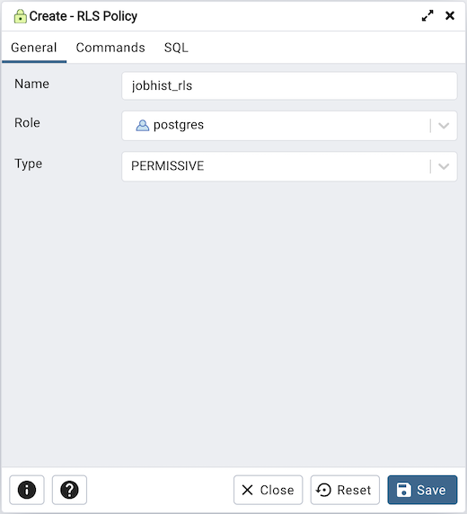
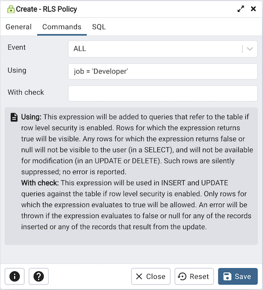
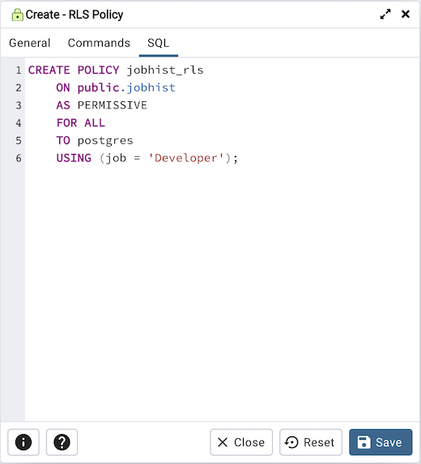

RLS Policy Dialog¶
Use the RLS Policy dialog to Create a Row Level Security Policy.
备注
If the Row Level Security is enabled at table level and no policy is created then by default Deny Policy is applied. That means, no rows are visible or can be modified for that table.
The RLS Policy dialog creates a Row Level Security Policy through the following dialog tabs: General, and Commands. The SQL tab displays the SQL code generated by dialog selections.
Use the fields in the General tab to define the RLS Policy:
Use the Name field to add a descriptive name for the RLS Policy. The name will be displayed in the pgAdmin tree control.
Use the drop-down listbox next to Role to select the Role to which the RLS Policy is to be applied.
Use the drop-down listbox next to Type to select the type of the policy.
Click the Commands tab to continue.
Use the fields in the Commands tab to define the RLS Policy:
Use the drop-down listbox next to Event to select the command to which policy applies. Valid options are ALL, SELECT, INSERT, UPDATE, and DELETE. Default is ALL.
Use the Using field to add a SQL conditional expression returning boolean. This expression will be added to queries that refer to the table if row level security is enabled.
Use the With check field to add a SQL conditional expression returning boolean. This expression will be used in INSERT and UPDATE queries against the table if row level security is enabled.
Click the SQL tab to continue.
Your entries in the RLS Policy dialog generate a SQL command (see an example below). Use the SQL tab for review; revisit or switch tabs to make any changes to the SQL command.
Example¶
The following is an example of the sql command generated by user selections in the RLS Policy dialog:
The example shown demonstrates creating a RLS Policy named jobhist_rls that applies the Row Level Security on the jobhist table.
Click the Info button (i) to access online help.
Click the Save button to save work.
Click the Close button to exit without saving work.
Click the Reset button to restore configuration parameters.